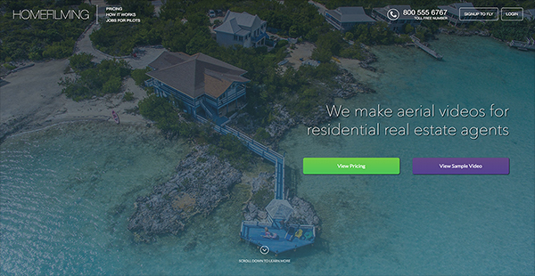
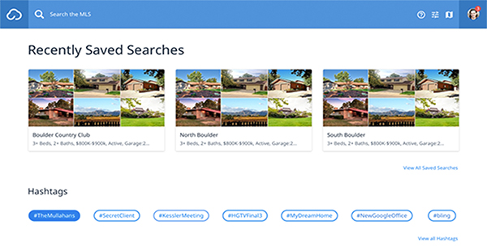
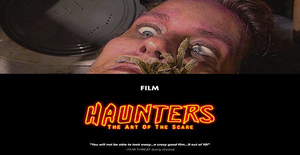
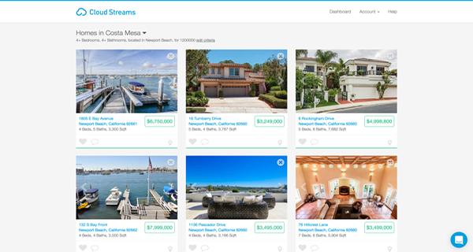

development toolset.
React, GraphQL, and Node (development)
Since building my first Rails application back in 2007 I have loved the beauty and simplicity of the Ruby language. One of my favorite features of Rails has to be the size of its community. The Ruby gems and contributions from fellow Ruby developers can be leveraged for efficient application development.
Jest, and Webpack (testing and bundling)
Before Node's existence, I was building full web applications using pure JS. I love the patterns and practices of React, but I don't mind going outside of its boundries when needed. The evolution of build systems has been a fun adventure to follow, from Grunt... to Gulp... to Webpack. I also enjoy working within a service oriented architecture that lends itself to proper separation of concerns. I also love clean API's with well formed JSON responses. View this porfolio on Github
Sequelize with Postgres and Mongo (databases)
PostgreSQL is a powerful, open source object-relational database system and Mongo is a NoSQL document store, containing many different key-value pairs, or even nested documents. Two drastically different approaches to deal with data, each with pros and cons.
Git, Flow, and Ruby on Rails (utils and extra talents)
This is normally a "duh" section on a resume. But with the advancement of the modern day browser, experience with things like complex HTML, CSS animations and flexbox layouts cannot be underestimated.
About Me
My Beginnings
I created my first website in 1994, at the age of 13, and soon developed a focus on the user experience, or “usability,” aspects of web development. I am largely self taught, with a strong work ethic, and over the past 20 years have gained practical experience with all sorts of languages, building my first web application in ASP.NET.
My Recent History
I got started with Ruby on Rails in 2007, creating many different projects over the years. In 2009, I helped build a social network using PHP and pure Javascript (no libraries, no jQuery) called Miio (github for Miio). Most recently I have created and maintained 5 full RoR applications at W+R Studios, along with prototyping proof of concepts for many major features using small Node/Express apps in order to get feedback. My last project at W+R Studios was Cloud MLX which won the 2016 Innovative Technology Award (from Inman) . My current contract is building an app for event based professionals. Its a RoR back end matched with a React/Redux front end.
My Future
I'm looking for an opportunity to work in an environment of aspirational projects and productive expectations. I enjoy working with small teams, in collaborative efforts with others who are productive, proud of their work, and committed to excellence. I appreciate working with team players that are open minded.
History
-
W+R Studios (2011 - 2016)
Over the span of several years I assisted in maintaining and launching 4 SAAS/Rails projects within a small, agile team for the real estate industry. Most recently creating a custom front end framework to consume a Rails JSON API.
Testimonial
"Derek Rush was the first developer hired by W+R Studios. From the beginning Derek has shown great vision with our flagship product and contributed to many favorable enhancements. Derek has also been instrumental contributing to the development of two additional products with key innovations that separates us from the competition. Derek is a strong collaborator with fellow teammates and has mentored new developers along the way. If you are considering adding to your team Derek is a proven asset every successful company should have." ~ Gary McDaniel - Director of Member Services, W+R Studios
Foldera (2001 - 2007)
Co-founded a software company that was aimed to improve project management and collaboration. My role was Lead Designer/Usability Engineer.
Recent Projects
Homefilming
Created this online service to facilitate real estate agents being able to order aerial photographs and videos of properties for marketing residential homes. Basically this service acts as a job board for licensed drone pilots to find local filming opportunities for fast cash do what they love. This site was built with Node and React, and powered by GraphQL and PostgreSQL.
This project also takes full advantange of some great API's to handle a lot of heavy lifting like video transcoding, payment processing and file storage.
Cloud MLX
Built a front end framework to search MLS's through a natural language search feature. Using complex Regex patterns we use autocomplete to match records and display results as the user enters search criteria. We achieve this by leveraging the performance of JS's non-blocking asynchronous nature, which is able to query multiple data sources at once. Our very small team beat massive companies to win.
The Brain Factory
The Brain Factory specializes in immersive entertainment, and is the company responsible for the Haunters documentary. Nothing that comes out of the Brain Factory is quite what you expect, from horror and VR, to 3D and publishing, its all high octane fun.
Haunters
This fun little project was a simple promotional website for a recently released documentary named "Haunters: The Art of the Scare". The main objective of this site was to keep fans of extreme haunts up to date on events and news surrounding all things horror. Check this movie out if you get the opportunity.
Cloud CMA

My first project at W+R Studios was an online comparative market analysis (CMA) report generator for real estate agents. My first big edit was to rewrite all prototype.js code in jQuery. I was able to add many features over time, such as the "Whats your home worth?" lead capturer and the very experimental bookmarklet which would generate CMA's through our API from other MLS systems results (this feature eventually got rolled into MLX). I also built the iPad version of Cloud CMA.
Cloud Streams
Cloud Streams delivers property alerts via email or SMS in lightning speed. The app allows real estate agents or their clients to set the criteria for homes they’re interested in being notified about. One of the many awesome features about this application is it’s performance. Cloud Streams alerts were proven to be sent out faster than Zillow, Redfin, Realtor.com and many more. This was due to leveraging the power of Elasticsearch and delivery services like Twilio and SendGrid.